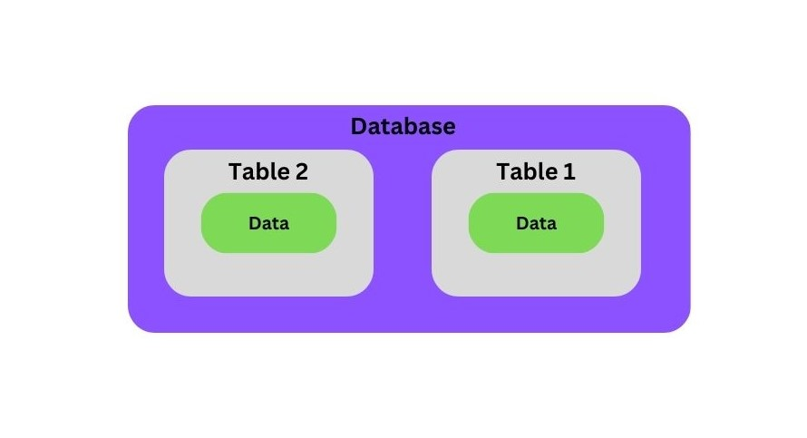

SQL
SQL is stands for "Structured Query Language" that is used to store, manipulate and retrieve data from RDBMS. (It is not a database, it is a language used to interact with database)
| Table Of Content | |
|---|---|
Overview
SQL is a programming language used to interact with relational databases.
It is used to perform CRUED Operations :
- Create
- Read
- Update
- Delete
Database Structure:
What is Table?
A table refers to the fundamental Structure used organizing and storing data. Each row represents a record, and each column represents a specific attribute or field of that record.
| Name | Class | Address |
|---|---|---|
| Aditya | BCA | Pragati Vihar |
| Rohit | BCA | Ganesh Colony |
| Rock | BBA | Prem Nagar |
Sql Data Types:
In SQL, data types define the kind of data that can be stored in a column or variable. Data types are used to represents the nature of the data that can be stored in the database table. For example, in a particular column of a table, if we want to store a string type of data then we will have to declare a string data type of this column.
Click on the link"Sql Data Types" for more information about data types.
Types of SQL Commands:
- DQL: DQL stands for "Data Query Language" that is used to retrieve data from databases. (SELECT)
- DDL: DDL stands for "Data Definition Language" that is used to create, alter, and delete database objects like tables, indexes, etc. (CREATE, DROP, ALTER, RENAME, TRUNCATE)
- DML: DML stands for "Data Manipulation Language" that is used to modify the databases. (INSERT, UPDATE, DELETE).
- DCL: DCL stands for "Data Control Language" that is used to grant & revoke permissions. (GRANT).
- TCL: TCL stands for "Transaction Control Language" that is used to manage transactions. (COMMIT, ROLLBACK, START TRANSACTION, SAVEPOINT).
SQL Joins:
In a DBMS, a join is an operation that combines rows from two or more tables based on a related column between them. Joins are used to retrieve data from multiple tables by linking them together using a common key or column.
SQL Set Operations:
Set Operations in SQl are used to combine or manipulate the result sets of multiple select queries. They allow you to perform operations similar to those in set theory, such as union, intersection, and difference, on the data retrieved from different tables or queries.
Set Operations provide powerful tools for managing and manipulating data, enabling you to analyse and combine information in various ways.